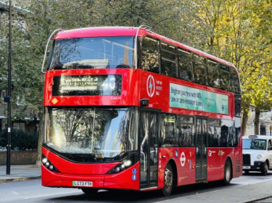
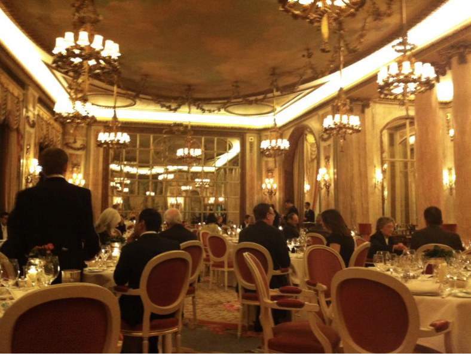

Tourist Webpage London
Click on the links to get to the page
Bus Transport for London (TfL) offers a convenient and efficient way to travel around the city. With an extensive network of buses, trains, and the iconic red double-decker buses, transport for London makes exploring London easy and accessible for both locals and tourist alike. Whether you're heading to popular pubs or family-friendly attractions, Tlf ensures you can reach your destination with ease. Experience the vibrant city of London with Transport of London!
Transport for London's website provides a wealth of information and services for travelers. On their website you can acces real-time travel updates, plan your journey using their journal planner tool, check service status for buses, trains and tubes, and even explore different opinions like cycling and walking routes. Additionally, you can manage your Oyster card, find maps, and get details on fares and discount available. Transport for London's website is a non-stop destination for all your travel needs in London.
Visit our Webpage

Pub London has a vibrant pub culture. Going to the Pub is a big part of the UK culture. It's a big part of the social scene there. You can find traditional pubs with cosy vibes and modern ones with a trendy atmosphere. People often gather at pubs to relax, catch up with friends, watch football, and enjoy a pint or two. It's a great way to experience the local culture.
Some popular pubs in London that you might enjoy are The Churchill Arms, The Spaniards inn, And The Ten Bells. Each has its own unique charm and history, making them great spots to experience the pub culture in London.
Travelling with family in London? Don't worry! In London, there are also family-friendly pubs in London where children are welcome. You might want to check out “The Prince of Wales”, “The Glazing Goat” and “The Duke of Kent”. These pubs offer a welcoming atmosphere for families to enjoy a meal together.
Top 10 eating places Discover London's Top 10 Dining Destinations!
- Circolo Popolare (Italian)
- Florattica Rooftop Bar London (Bar)
- Tatty London (Asian)
- The Real Greek (Greek)
- Olivelli - Watherloo (Italian)
- Hslepi (Greek)
- Kazan Restaurant (European)
- Flat Iron Covent Garden (Steakhouse)
- Blacklock Soho (Barbecue)
- Da Mario Covent Garden (Italian)



{kind=link}
{kind=link}
{kind=link}
{kind=link}
{kind=link}